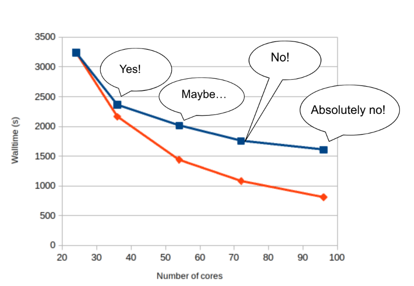

Checklist¶
If you develop your own codes/scripts or would like to increase the allocated resources for an existing code, please work through this checklist before submitting your production runs or a large number of jobs.
Is your code/script parallelised? No -> Use one core: n 1 not N 1
If yes -> How is it parallelised?
Can your code make use of more than one node? Check by first doing short test jobs.
Does the job finish quicker when more resources are allocated?
Does the job make use of all the allocated resources? Use e.g. seff:
$seff job_id_of_test_job Example output Job ID: 26294158 Cluster: tetralith User/Group: x_alewi/x_alewi State: COMPLETED (exit code 0) Nodes: 4 Cores per node: 32 CPU Utilized: 474-08:22:07 CPU Efficiency: 99.60% of 476-05:58:24 core-walltime Job Wall-clock time: 3-17:17:48 Memory Utilized: 166.25 GB (estimated maximum) Memory Efficiency: 0.00% of 0.00 MB (0.00 MB/node)What is the difference between the core-walltime and Job Wall-clock time here? The Wall time is how long time it takes for your job to finish, in “real time”. The core-walltime (or total number of core hours used for the job) is the wall time multiplied with the number of allocated cores, i.e. 34*4 times 3 days, 17 hours, 17 minutes and 48 seconds in the example above.
Is the code parallelised with MPI, OpenMP or simply running independent processes in parallel? If you are not sure how to allocate the right resources, ask for help.
How does your job scale? The performance will decrease with increasing number of resources (communication overhead) and there is always a performance-walltime tradeoff. How important is it to have your job finish more quickly? Is the decreased job time worth the extra core hour consumption?
Example scalability test. Blue line shows the walltime for the job depending on the number of cores used. The red line shows ideal scaling. The difference between the blue and red lines represents communication overhead/blocking etc. I would use 32 cores for this job based on the performance test.
The maximum wall time on Tetralith is 7 days. If your job cannot finish within 7 days, there are workarounds, but these should in general be avoided [*]. If your jobs need more than seven days of wall time, please ask for help to set up a plan for how to manage your jobs.
Is your resource usage reasonable? The answer is usually “It depends”. A rule of thumb is:
“Avoid using resources in a way that blocks other users from using them or prevents them from working efficiently”. What this means depends on the current workload in the project. Please always check the queue status and current usage before submitting a job
Check the queue of the project:
$ squeue -A naiss2024-1-3
Check the recent usage
$ projinfo Principal Investigator (PI): Qiong Zhang Slurm account: naiss2024-1-3 Current core time allocation: 2000000 h/month Consumed compute resource time during the last 30 days: Total: 2001774.68
Keep checking the queue and core time consumption as your jobs run.
{kind=link}
[*] Why should workarounds for extending the wall time beyond seven days be avoided? On NSC systems it’s possible to use something called boost-tools to tweak job priorities, wall-time limits and create node reservations. However, these tweaks always come at cost. The project pays with boost-tool tokens that are shared amongst all users within the project. In addition to that, by using boost-tools, you make your colleagues within the same project queue longer than what they would if you hadn’t used the boost-tools.
More specifically, the issue associated with extending the wall time beyond seven days, is that you run a risk of not being able to finish your job, and thus waste the used core hour of a job with a wall time of seven days (and “punish” other project members by wasting core-hours). NSC has a policy to inform about planned downtime of their systems with at least seven days notice. That means that a planned downtime might appear after a job that relies on an extended wall time has been started and the job will not finish. Moreover, since the tokens are available to all project members, you can’t rely on tokens being available when you need to extend the wall time. Someone else might have used up the tokens.
If there is no other solution, wall-time extensions can be used, but should be thought through carefully, and not used routinely.
More information about boost-tools can be found here: https://www.nsc.liu.se/support/batch-jobs/boost-tools/